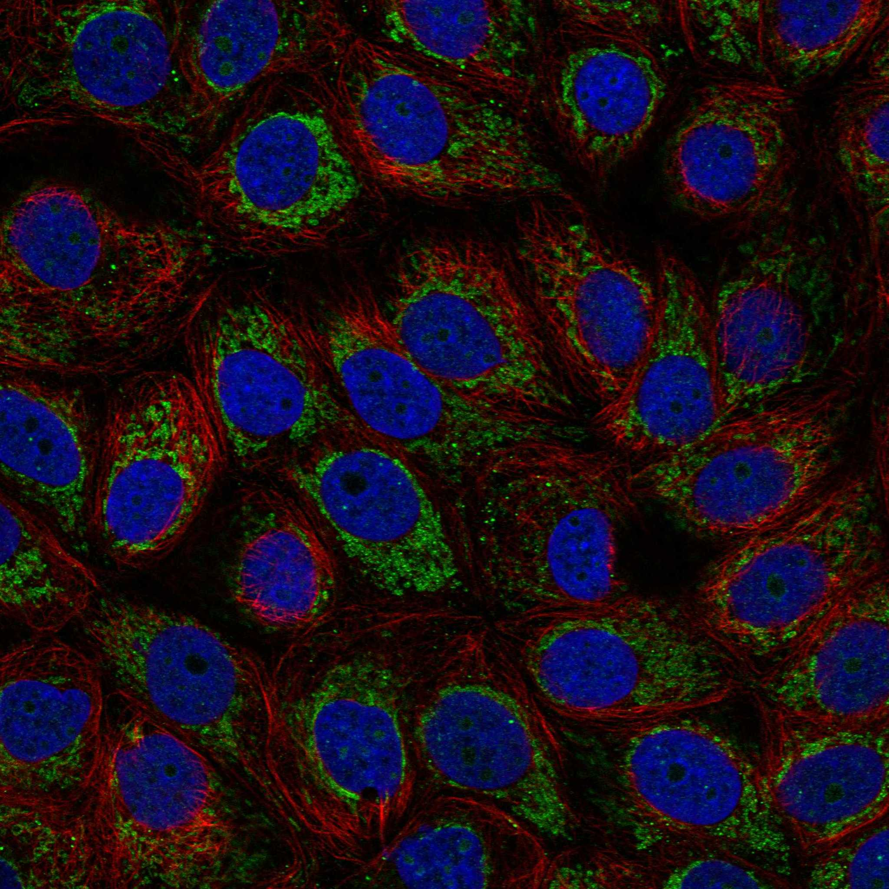
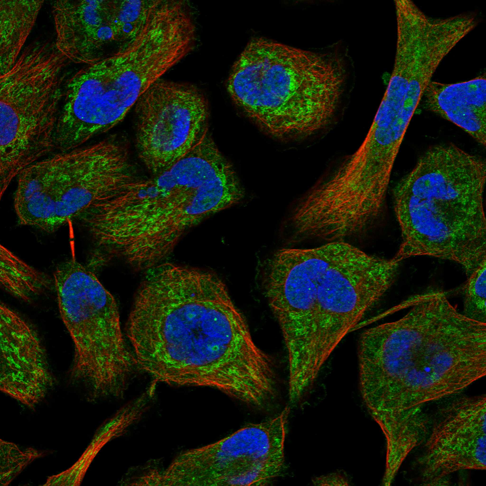
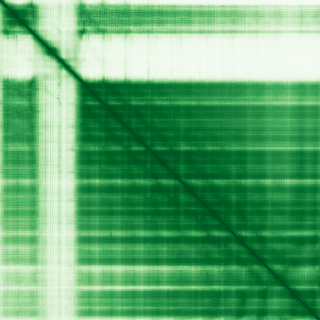

type: protein-evaluation gene: "ASB18" date: 2026-05-29 tags: [protein-scout, nuclear-protein, evaluation] status: scored ---
ASB18 核蛋白评估报告
1. 基本信息
| 项目 | 内容 |
|---|---|
| 基因名 / 别名 | ASB18 / Ankyrin repeat and SOCS box protein 18 |
| 蛋白大小 | 466 aa / 50.8 kDa |
| UniProt ID | Q6ZVZ8 |
| 评估日期 | 2026-05-29 |
2. 评分总览
| 维度 | 得分 | 满分 | 加权后 | 关键证据摘要 |
|---|---|---|---|---|
| 核定位特异性 | 5/10 | ×4 | 20 | HPA IF: Mitochondria (main) + Nucleoli (additional, approved), 2/3细胞系有核仁信号 |
| 蛋白大小 | 10/10 | ×1 | 10 | 466 aa (200-800 aa，适合生化实验) |
| 研究新颖性 | 10/10 | ×5 | 50 | PubMed 3篇，极度新颖 |
| 三维结构 | 8/10 | ×3 | 24 | AlphaFold pLDDT 80.88 (mean), 81.8% >70, 无PDB |
| 调控结构域 | 7/10 | ×2 | 14 | ANK repeats (x6) + SOCS box (E3 ubiquitin ligase), baseline |
| PPI 网络 | 1/10 | ×3 | 3 | IntAct 0条, GO-CC cytosol, 无PPI数据 |
| 互证加分 | — | max +3 | +0.0 | 无多源互证 |
| 原始总分 | 121/183 | |||
| 归一化总分 | 66.1/100 |
3. 详细分析
3.1 核定位证据
| 来源 | 定位 | 可信度 |
|---|---|---|
| Protein Atlas (IF) | Mitochondria (main, approved) + Nucleoli (additional, approved) | Approved |
| UniProt | GO-CC: cytosol | — |
IF 图像:  
结论: 主要线粒体定位，附加核仁定位。HPA Approved。MCF-7 和 Rh30 显示核仁信号，K-562 仅显示线粒体。核仁定位为二级定位（非 main），但 Approved 可靠性。UniProt 仅标注 cytosol（GO-CC）。
3.2 蛋白大小评估
评价: 466 aa, 50.8 kDa，大小非常适合生化实验和结构解析。
3.3 研究现状
| 指标 | 数值 |
|---|---|
| PubMed 总数 | 3 |
| 最早发表年份 | 2005 |
| Chromatin/epigenetics 比例 | 0% |
主要研究方向:
- Cullin5-Rbx2 E3 ubiquitin ligase 复合体形成
- 非综合征唇腭裂 (GWAS)
- 东亚青年非吸烟者肺腺癌 (germline mutations)
关键文献: 1. Kohroki J et al. (2005). "ASB proteins interact with Cullin5 and Rbx2 to form E3 ubiquitin ligase complexes". *FEBS Lett*. PMID: 16325183 2. Fu F et al. (2023). "Identification of Germline Mutations in East-Asian Young Never-Smokers with Lung Adenocarcinoma by Whole-Exome Sequencing". *Phenomics*. PMID: 37197646 3. Gowans LJJ et al. (2022). "Genome-Wide Scan for Parent-of-Origin Effects in a sub-Saharan African Cohort With Nonsyndromic Cleft Lip and/or Cleft Palate (CL/P)". *Cleft Palate Craniofac J*. PMID: 34382870
评价: 仅 3 篇 PubMed，极度新颖。唯一的功能研究来自 2005 年（FEBS Lett，ASB-Cullin5-Rbx2 E3 ligase complex），后续均为 GWAS 或外显子测序关联。ASB18 的生物学功能几乎未被研究。
3.4 三维结构分析
| 指标 | 数值 |
|---|---|
| AlphaFold 平均 pLDDT | 80.88 |
| pLDDT >90 占比 | 49.8% |
| pLDDT 70-90 占比 | 32.0% |
| pLDDT <50 占比 | 13.3% |
| 可用 PDB 条目 | 0 |
PAE 图: 
评价: AlphaFold 高质量预测 (mean pLDDT 80.88)，81.8% 残基 >70 高置信度。6 个 ANK repeats (119-321) 形成串联螺旋束，SOCS box (405-463) 区域折叠良好。N 端 (1-118) 有部分无序。无 PDB 实验结构。
3.5 结构域分析
| 来源 | 结构域 |
|---|---|
| UniProt InterPro | Ankyrin repeat, SOCS box, SOCS box-like domain |
| Pfam | Ank_2, SOCS_box |
| SMART | ANK, SOCS_box |
| PROSITE | ANK_REP_REGION, ANK_REPEAT, SOCS |
| UniProt Features | 6 ANK repeats [119-321], SOCS box [405-463] |
染色质调控潜力分析: ANK repeats 介导蛋白-蛋白相互作用，是 E3 泛素连接酶底物识别的支架。SOCS box 介导 Cullin5 结合和 E3 ubiquitin ligase 组装。ASB18 属于 ASB (Ankyrin-SOCS box) 家族，功能为底物识别 adaptor，介导靶蛋白泛素化降解。无 chromatin/DNA-binding 结构域。但 E3 ligase 活性可参与核蛋白调控（核仁底物泛素化）。baseline 评分。
3.6 PPI 网络
实验验证互作 (IntAct):
| Partner | 方法 | 功能类别 | 调控相关？ |
|---|---|---|---|
| 无 | — | — | — |
STRING 预测互作: API 不可用。
已知复合体成员 (GO Cellular Component):
- Cytosol
PPI 互证分析:
- IntAct 实验验证: 0 条
- GO-CC: 仅 cytosol
- 调控相关比例: N/A
评价: 无任何 PPI 数据。极度新颖导致 PPI 稀疏，属正常现象。但作为 E3 ligase adaptor，应存在底物和 Cullin5-Rbx2 复合体互作（Kohroki et al. 2005 FEBS Lett 中已报道 Cullin5 和 Rbx2 互作，但这些是 ASB 家族共有而非 ASB18 特异）。
3.7 多库互证
| 维度 | 来源 | 结果 | 是否一致 |
|---|---|---|---|
| 定位 | Protein Atlas IF / UniProt | Nucleoli+Mitochondria vs Cytosol | 不一致 |
| 结构域 | UniProt / InterPro / Pfam / SMART | ANK + SOCS box 多库确认 | 一致 |
互证加分明细: 0 总分: +0.0 / max +3
4. 总体评价
推荐等级: (2/5)
核心优势: 1. 极度新颖 (3 篇 PubMed) 2. AlphaFold 高质量 (80.88 mean pLDDT) 3. 大小理想 (466 aa) 4. E3 ubiquitin ligase adaptor 功能清晰 (SOCS box)
风险/不确定性: 1. 核仁定位为二级定位 (main 是线粒体)，核定位信号弱 2. UniProt GO-CC 仅 cytosol，与 HPA 核仁定位不一致 3. 无 PPI 数据，底物完全未知 4. ASB 家族 E3 ligase 功能已被广泛研究，创新空间有限 5. 3 篇论文中仅有 1 篇功能研究 (2005)
下一步建议:
- [ ] 独立验证核仁定位
- [ ] ASB18 在 E3 ligase 之后是否有独特功能
5. 数据来源
- UniProt: https://www.uniprot.org/uniprotkb/Q6ZVZ8
- Protein Atlas: https://www.proteinatlas.org/ENSG00000182177-ASB18/subcellular
- PubMed: https://pubmed.ncbi.nlm.nih.gov/?term=%22ASB18%22
- AlphaFold: https://alphafold.ebi.ac.uk/entry/Q6ZVZ8
PPI 网络（三源综合）
| Partner | Source | Score/Evidence |
|---|---|---|
| 无记录 | — | — |
IntAct 有限记录。无 BioGrid 补充数据。
PAE 图像已获取。结构判断基于 AlphaFold pLDDT 统计。
<!-- DOMAIN_HUMANPPI_REPAIR_START -->
Domain/SMART 与 humanPPI 补充（2026-06-07）
SMART / UniProt domain
| Source | Data | |
|---|---|---|
| UniProt | Q6ZVZ8 | |
| SMART | SM00248;SM00969; | |
| UniProt Domain [FT] | DOMAIN 405..463; /note="SOCS box"; /evidence="ECO:0000255\ | PROSITE-ProRule:PRU00194" |
| InterPro | IPR002110;IPR036770;IPR001496;IPR036036; | |
| Pfam | PF12796;PF07525; |
humanPPI / HPA Interaction
Source: https://www.proteinatlas.org/ENSG00000182177-ASB18/interaction
未从 HPA Interaction 页面解析到互作伙伴；需人工复核或使用其他 humanPPI 来源。 <!-- DOMAIN_HUMANPPI_REPAIR_END -->